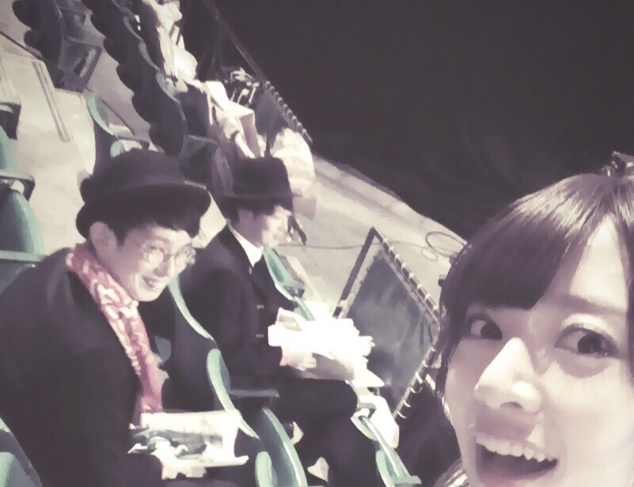

| 2016/04 03 Sun | 言いたいことありすぎたんだ けど溜まりすぎて何から言えばい いか分からないので最近の仕事編 |
東京ガールズコレクション！出演させて頂きました！ありがとうございました！楽しかった！！
オリラジさんのステージを見に来たパリピ気取り

滲み出るインドア感
この前はらじらー！に呼んでもらって、オリラジさんとひめたんと楽しい１時間を過ごしたよ！
藤森さんいくちゃん推しのはずが推し増し疑惑！うへへへ！
でも知ってるんだ、藤森さんの本当の推しは、ひめたんだってこと。わたしは、勝てないぜ。見えるぜ。
オリラジさんはひめたんのことをものすごく理解してくれているし、ひめたんはらじらーさんに愛されているなあと出演するたび思う、嬉しい気持ちになってお家帰るよ毎回。また呼んでほしい。笑
そしてゲストでサプライズ出演させてもらった、ホイッスルソング！いぇい！！
SCHOOL OF LOCK！と進研ゼミ＋さんがこの時期に開催している、学生の卒業と進級をお祝い、応援するライブイベント！
今年は
[Alexandros] さん、
BLUE ENCOUNTさん、
UNISON SQUARE GARDENさん
が登場！！
裏で全部ライブ観れた！なんというお仕事！最高！笑
本番前、隠し撮りしてるの気付かれた！
とーやま校長！あしざわ教頭！

46時間TVぶり(^○^)！
サプライズ出演ってことで告知一切なしで出たもんだから、やっぱりドロスさんブルエンさんユニゾンさん校長教頭SOLのファンの方がほとんどな訳でしょう。
もうさ、わたしがサプライズになるんだろうか、え、誰？みたいになんないだろうかとずーっとヒヤヒヤしてたんだけど、みんな、なんて優しいの！！！
良いパターンで想像した反応を遥かに越えるみんなのあたたかい反応！声！
うわあ～～～来てよかった～～～～って出た瞬間思った～～～～！笑
ありがとう～～～～ございました～～～～～～！！
年度も替わってみんな新しい道を進んでると思うけど、思ったより心配してることはなんとかなっていくもんだぞ～～仮につらくてもつらいのは最初だけだ～～応援しているぞ～～～！！！
じゃーん

北海道新幹線、開通したんだよ！
北海道&青森グルメWalkerに出させてもらったときに頂いたドーナツが、みてみて！

わたしバージョン！！笑
戴いたのー！！
ななみんって書いてるー！すごい！笑
おいしいし！！！
ななみんバージョンは売ってないと思うけど、
美味しいからぜひみんなも食べてみてね！

髪伸びてきたわ、肩につく！
コメント(1264)
2016/04/03 16:06